|
Yang Sui | 隋阳
Howdy! I'm a fourth year Ph.D. student at Rutgers University, ECE Department, working on deep learning, machine learning and computer vision, advised by Prof. Bo Yuan. I received my M.S. and B.E. at Jilin University.
I'm currently a Research Intern at Tencent America, Media Lab, working with Dr. Ding Ding, Prof. Zhenzhong Chen since 2022, exploring efficient neural image compression and Transformer models. In 2019, I was a full-time Algorithm Engineer at JD, working on the face verification and recognition. I also spent a wonderful time as a Research and Development Intern, initializing the deep learning inference framework Paddle-Lite (6.4k stars now) at Baidu in 2018.
I'm honored that will be joining Georgia Institute of Technology as a PostDoc in 2024, continuing to work on efficient deep learning with Prof. Saman Zonouz. I'm really looking forward to the collaboration related to efficient deep learning. If you're interested in working with me, please don't hesitate to contact me. I'm eager to get started!
In addition to my academic work, I am passionate about Basketball, DOTA/DOTA2, World of Warcraft, Warcraft III. I am also a fan of Soccer, Formula 1, Snooker. I love Tracy McGrady, Stephen Curry, Lionel Messi, PIS (YaphetS). I'm an experienced player of Druid (Balance Druid), DH (Havoc Demon Hunter) in WoW, and NE (Night Elf) in Warcraft III. I derive great pleasure from listening to the music that owns wonderful rhythm, especially R&B, and classical music from Chopin, Bach, Paganini.
Xiaolan (name is inspired from "Detective Conan"), my adorable grey and white cat with sparkling eyes, which appears in my NeurIPS'21 paper "CHIP", is playful, affectionate, and loves to cuddle. Say hi, Xiaolan!
Email /
CV (Feb 2023) /
Google Scholar /
LinkedIn
|
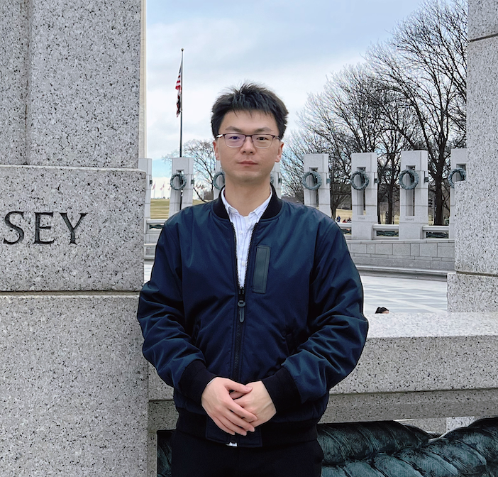
|
|
Research
I'm interested in efficient deep learning, investigating how to optimize computational resources (e.g., parameters, data, computation) and model performance (e.g., inference, training).
Efficient Training & Model Compression Algorithms
Algorithm-hardware Co-design for AI Acceleration
Efficient Vision Transformer
Neural Image Compression
Error Correct Coding
|
|
Welcome to join Efficient Deep Learning Reading Group (EDLRG) (知乎link)
Are you interested in efficient deep learning but find it hard to keep up with the latest research? Join our Efficient Deep Learning Reading Group! Our group is focused on reading and discussing the most important and influential papers in deep learning, with a special emphasis on efficiency and practical applications.
By joining our group, you'll have the opportunity to:
Stay up-to-date with the latest research in efficient deep learning, without having to spend countless hours sifting through papers on your own.
Engage in thoughtful and productive discussions with other deep learning enthusiasts, sharing your insights and learning from others.
Develop a deeper understanding of the key concepts and techniques in deep learning, and how they can be applied in real-world scenarios.
Connect with like-minded individuals and build meaningful relationships with friends who are also interested in related fields.
Our group meets once a week via Zoom, and sessions typically run for 60 minutes. We welcome participants of all backgrounds and experience levels, as long as you have a basic understanding of deep learning fundamentals. To ensure a high-quality experience for all members, we do ask that you commit to attending regularly and actively participating in discussions.
If you're interested in joining our group, please fill out the application form on our website. We look forward to hearing from you!
|
|
News
|
|
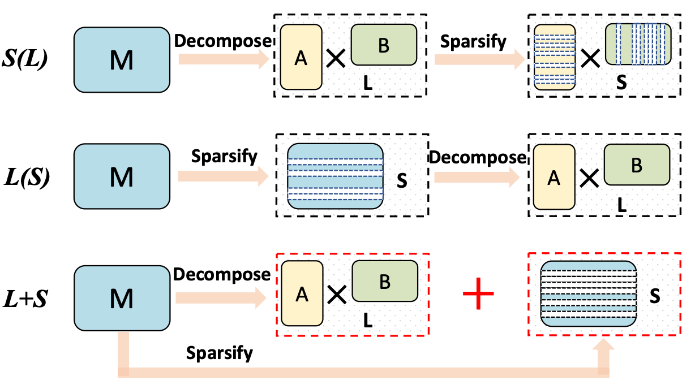
|
Towards Sparse and Low-rank Neural Networks with Hybrid Compression
Yang Sui, Wanzhao Yang, Miao Yin, Yu Gong, Bo Yuan
[AAAI 2023 Workshop] DCAA, The First Workshop on DL-Hardware Co-Design for AI Acceleration
Website
Best Paper Runner-Up Award
|
|
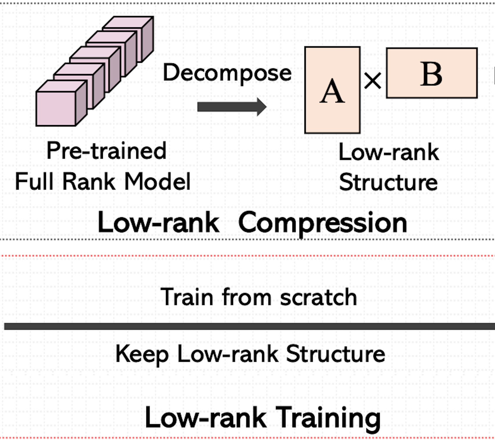
|
Training Low-Rank CNNs with Orthogonality From Scratch
Yang Sui, Miao Yin, Bo Yuan
[AAAI 2023 Workshop] DCAA, The First Workshop on DL-Hardware Co-Design for AI Acceleration
Website
|
|
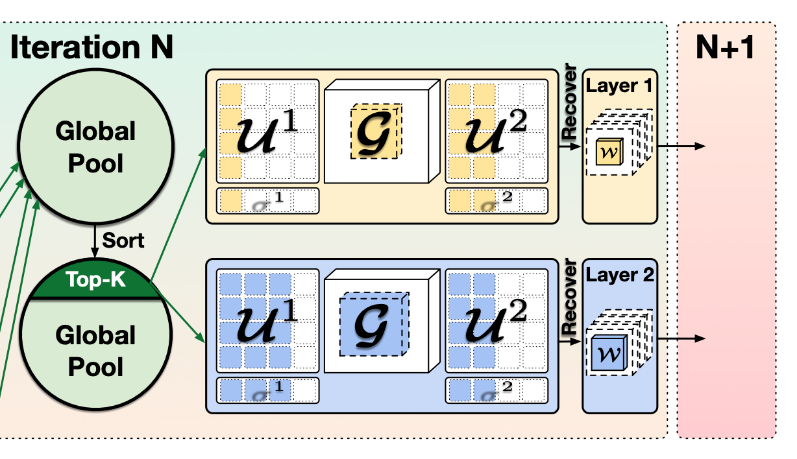
|
CSTAR: Towards Compact and STructured Deep Neural Networks with Adversarial Robustness
Huy Phan, Miao Yin, Yang Sui, Bo Yuan, Saman Zonouz
[AAAI 2023] The 37th AAAI International Conference on Artificial Intelligence
PDF
Oral
|
|
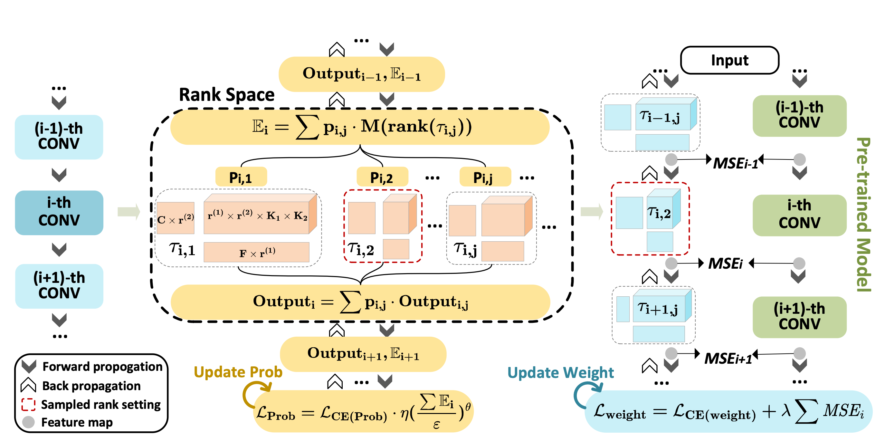
|
HALOC: Hardware-Aware Automatic Low-Rank Compression for Compact Neural Networks
Jinqi Xiao, Chengming Zhang, Yu Gong, Miao Yin, Yang Sui, Lizhi Xiang, Dingwen Tao, Bo Yuan
[AAAI 2023] The 37th AAAI International Conference on Artificial Intelligence
PDF
Oral
|
|
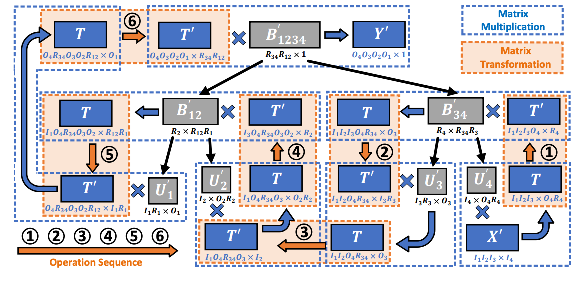
|
Algorithm and Hardware Co-Design of Energy-Efficient LSTM Networks for Video Recognition with Hierarchical Tucker Tensor Decomposition
Yu Gong, Miao Yin, Lingyi Huang, Chunhua Deng, Yang Sui, Bo Yuan
[IEEE TC] IEEE Transactions on Computers
PDF
|
|
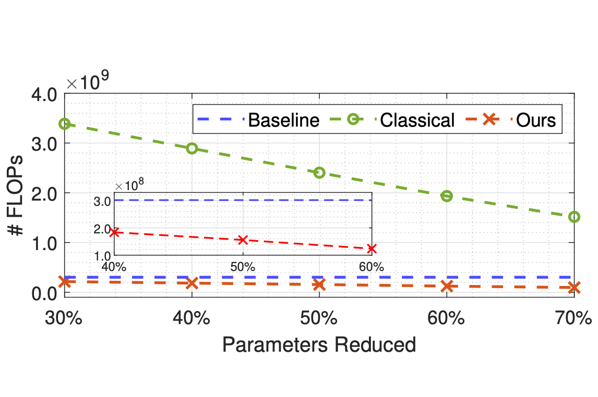
|
HODEC: Towards Efficient High-Order DEcomposed Convolutional Neural Networks
Miao Yin, Yang Sui, Wanzhao Yang, Xiao Zang, Yu Gong, Bo Yuan
[CVPR 2022] The IEEE/CVF Conference on Computer Vision and Pattern Recognition
PDF
|
|
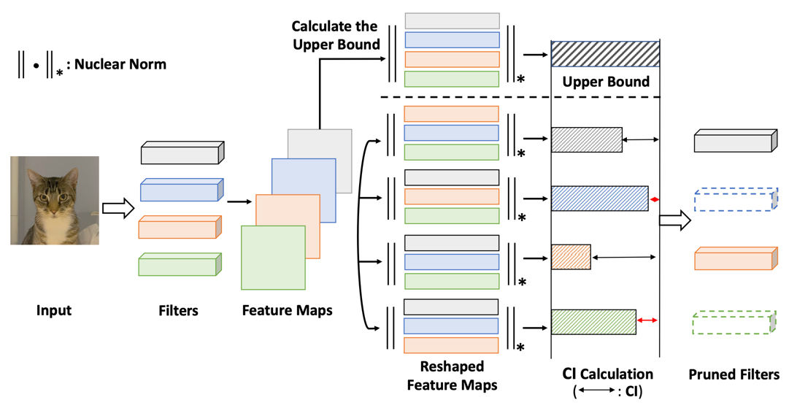
|
CHIP: CHannel Independence-based Pruning for Compact Neural Networks
Yang Sui, Miao Yin, Yi Xie, Huy Phan, Saman Zonouz, Bo Yuan
[NeurIPS 2021] The 35th Conference on Neural Information Processing Systems
PDF
|
|
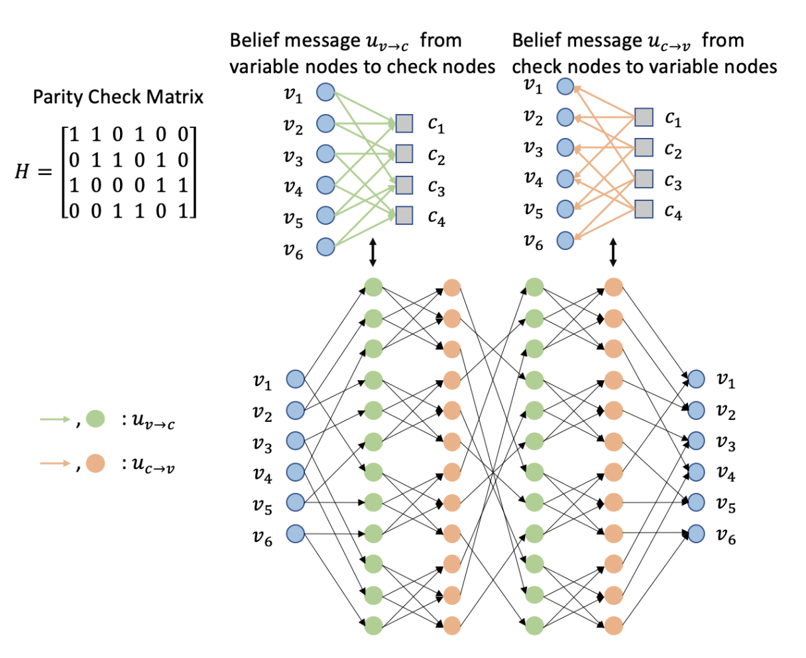
|
Algorithm and Hardware Co-design for Deep Learning-powered Channel Decoder: A Case Study
Boyang Zhang*, Yang Sui*, Lingyi Huang, Siyu Liao, Chunhua Deng, Bo Yuan
[ICCAD 2021] The IEEE International Conference on Computer-Aided Design
PDF
|
|
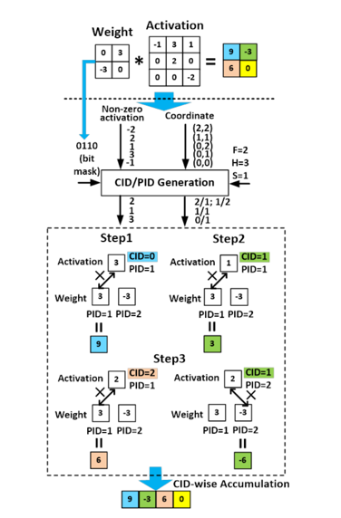
|
GoSPA: An Energy-efficient High-performance Globally Optimized SParse Convolutional Neural Network Accelerator
Chunhua Deng, Yang Sui, Siyu Liao, Xuehai Qian, Bo Yuan
[ISCA 2021] The ACM/IEEE 48th Annual International Symposium on Computer Architecture
PDF
|
|
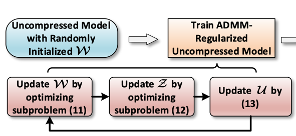
|
Towards Efficient Tensor Decomposition-Based DNN Model Compression With Optimization Framework
Miao Yin, Yang Sui, Siyu Liao, Bo Yuan
[CVPR 2021] The IEEE/CVF Conference on Computer Vision and Pattern Recognition
PDF
|
Professional Services
-
Program Committee Member:
-
ICML'22, 23
-
NeurIPS'22
-
CVPR'22, 23
-
ECCV'22
-
AAAI'22, 23
-
Journal Reviewer:
-
IEEE Transactions on Neural Networks and Learning Systems (TNNLS)
|
Teaching Experiences
-
Teaching Assistant at Rutgers University
|
Supervised Students
Wenjin Zhang, Ph.D. at Rutgers University
Topic: Quantization, Model Compression
Justin Ding, Master at Rutgers University
Topic: Pruning, Model Compression
Linqi Xiao, Master at Rutgers University
Topic: Error Correct Coding, Channel Coding
Srinihar Bondalapati, Master at Rutgers University
Topic: Quantization, Model Compression
Yue Wang, Master at Rutgers University
Topic: Model Compression
|
Honors and Awards
-
Doctor of Philosophy (Ph.D.)
-
Master of Science (M.S.)
-
Graduate Student Academic Scholarship, 2018
-
Graduate Student Academic Scholarship, 2017
-
Bachelor of Engineering (B.E.)
-
Postgraduate Recommendation (10% in EE at Jilin University), 2016
-
Outstanding Graduates, 2016
-
Second Prize Scholarship, 2015
-
Second Prize Scholarship, 2014
-
Second Prize Scholarship, 2013
|
- World Top 10 DPS of Balance Druid with H4 (Flamebender Ka'graz) in Blackrock Foundry reported on WCL, World of Warcraft, 2015
- Raid Leader for defeating the Heroic Highmaul Raid in the Warlords of Draenor, World of Warcraft, 2014
- I gathered my fourteen friends and together we conquered the Heroic Highmaul raid. It was an incredibly impressive experience that we won't soon forget.
- Member of DOTA team in Jilin City No.1 High School, 2011
|
|
{kind=link}